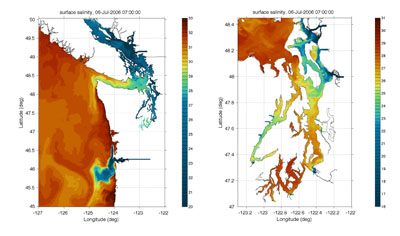

MoSSea: Modeling the Salish Sea
This project created the first ever high-resolution, realistic hindcast simulations of the physical circulation in the entire Salish Sea region. We ran realistic hindcasts for 2005 and 2006, with model details and extensive validation documented in Sutherland et al. (2011). The model fields have subsequently been used for a virety of other projects, including particle tracking to map the influence of flow from the many rivers in the Sound on water quality (Banas et al. 2015, Conway-Cranos et al. 2015).
|  | The model domain covers the Salish Sea: Puget Sound, the Strait of Georgia, and the Strait of Juan de Fuca, along with the coastal waters of Washington, Oregon, and Vancouver Island. It is forced with realistic winds, rivers, tides, and open ocean boundary conditions. |
REFERENCES
- Banas, N. S., L. Conway-Cranos, D. A. Sutherland, P. MacCready, P. Kiffney, and M. Plummer, 2015: Patterns of River Influence and Connectivity Among Subbasins of Puget Sound, with Application to Bacterial and Nutrient Loading. Estuaries and Coasts, 38, 735–753, doi:10.1007/s12237-014-9853-y.
- Conway-Cranos, L., P. Kiffney, N. Banas, M. Plummer, S. Naman, P. MacCready, J. Bucci, and M. Ruckelshaus, 2015: Stable isotopes and oceanographic modeling reveal spatial and trophic connectivity among terrestrial, estuarine, and marine environments. Mar. Ecol. Prog. Ser., 533, 15–28, doi:10.3354/meps11318.
- Sutherland, D. A., P. MacCready, N. S. Banas, and L. F. Smedstad, 2011: A Model Study of the Salish Sea Estuarine Circulation *. J. Phys. Oceanogr., 41, 1125–1143, doi:10.1175/2011JPO4540.1.
This material is based upon work supported by the Puget Sound Regional Synthesis Model (PRISM) project, the National Science Foundation (NSF) Grant No. 0849622, the G. Unger Vetlesen Foundation, and the National Oceanic and Atmosperic Administration (NOAA). Any opinions, findings, and conclusions expressed in this material are solely those of the author(s).